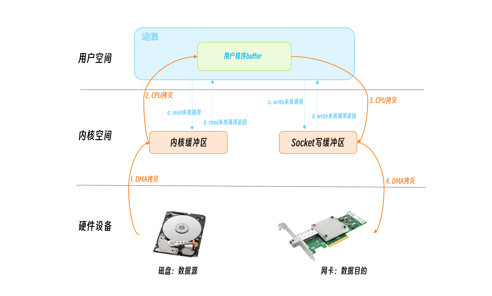
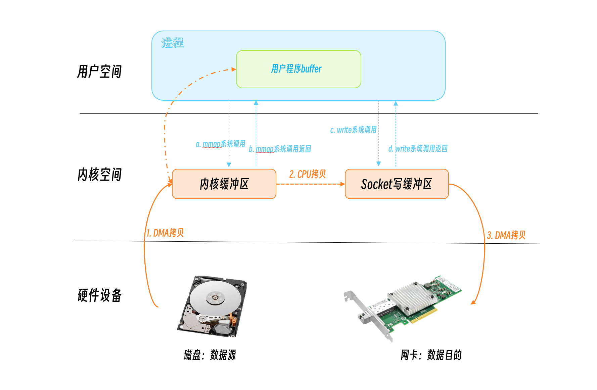
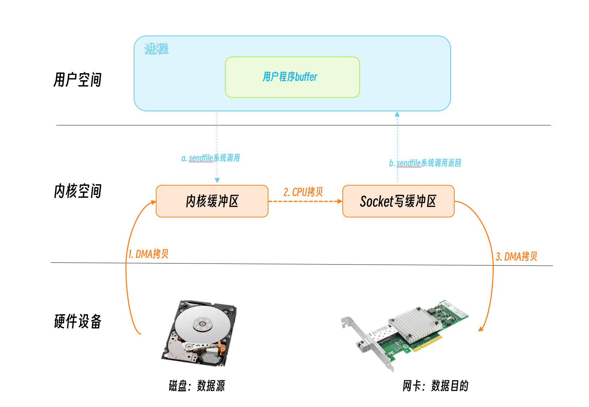
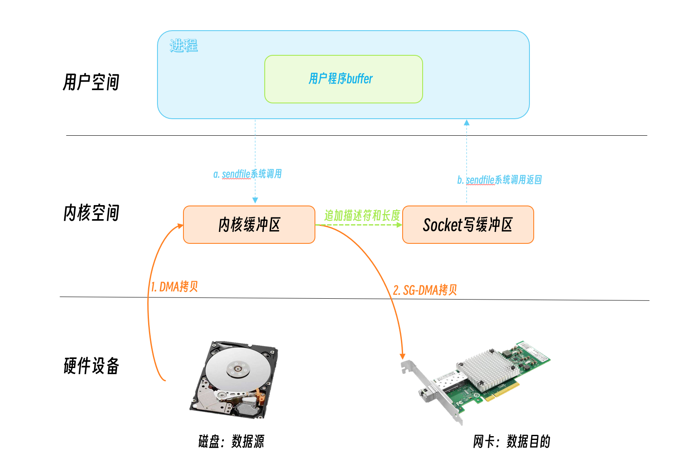
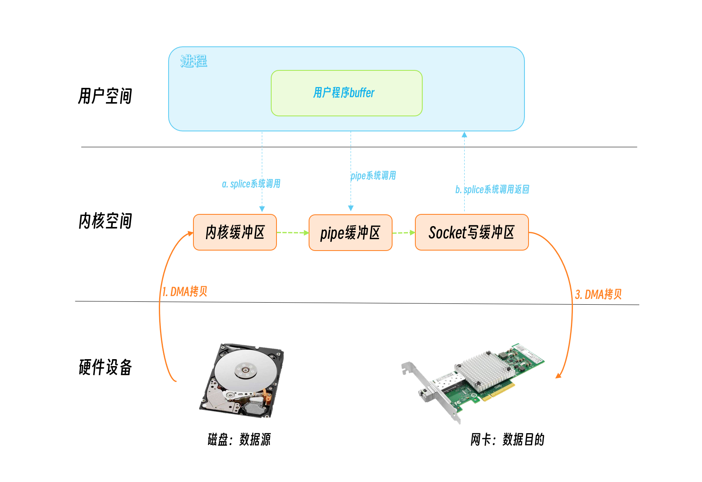
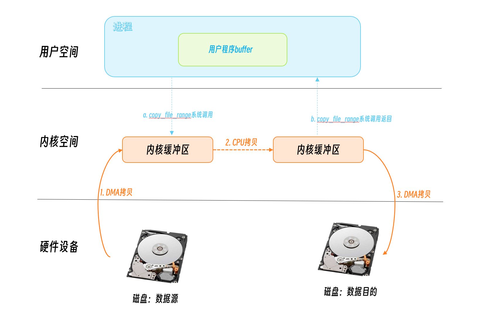

零拷贝(zero copy)在一些语境下指代的意思有所不同,本文讲的零拷贝就是大家常说的，通过这个技术让CPU释放出来不去执行内存中数据拷贝的功能，或者避免不必要的拷贝，所以说零拷贝不是没有数据的拷贝(复制)，而是广义上讲的减少和避免不必要的数据拷贝,可以用来节省CPU使用和内带宽等，比如通过网络高速传输文件、实现网络proxy等等，零拷技术可以极大的提高程序的性能。
本文总结零拷贝的各种技术，下一篇介绍常见的零拷贝技术在Go语言中的应用。
零拷贝技术
其实，零拷贝很久以来都被用在提升程序的性能上，比如nginx、kafka等，而且很多文章也详细介绍了零拷贝就要解决的问题，我在这里还是在总结一下，如果你已经了解了零拷贝的计数，不妨回顾一下。
我们来分析一个从网络读取文件的场景。服务器从磁盘读取一个文件，并写入到socket中返回给客户端。我们看看服务端的数据拷贝情况：

程序开始使用系统调用read告诉操作系统要从磁盘文件中读取数据，它首先从用户态切换到内核态，这个切换是有花费的，操作系统需要保存用户态的状态，一些寄存器的地址等，等read系统调用完成后返回，程序又需要从内核态切换到用户态，把保存的用户态的状态恢复，所以一次系统调用需要两次的用户态/内核态的切换。同样，把文件的内容写入到socket的时候，程序调用write系统调用，又进行了两次用户态/内核态的切换。
从操作的数据来看，这个数据还被拷贝了四次。在read系统调用的时候，DMA方式从磁盘拷贝到内核缓冲区，又通过CPU拷贝从内核缓冲区拷贝到用户的程序缓冲区，这里发生了两次拷贝。在写入socket的时候，数据先从用户程序缓冲区写入到socket缓冲区，又通过DMA方式从socket缓冲区写入到网卡。数据拷贝也发生了四次。
DMA(Direct Memory Access，直接存储器访问) 是计算机科学中的一种内存访问技术。它允许某些电脑内部的硬件子系统（电脑外设），可以独立地直接读写系统内存，允许不同速度的硬件设备来沟通，而不需要依于中央处理器的大量中断负载。
你可以看到，传统的IO读写方式，包括了四次用户态/内核态的上下文切换，四次数据的拷贝，对性能的影响还是挺大的。广义的零拷贝的技术，就是要尽量减少用户态/内核态的上下文切换，以及数据的拷贝次数，为此操作系统也提供了几种方法。
mmap + write
通过mmap系统调用，将用户空间的虚拟地址和内核空间的虚拟地址映射成同一个物理地址这样可以减少内核空间和内核空间的数据拷贝。

通过mmap系统调用发起IO读取，DMA将磁盘数据写入到内核缓冲区，此时mmap系统调用就返回了。程序调用write系统调用，CPU将内核缓冲区的数据写入到socket缓冲区，DMA又将数据从socket缓冲区谢瑞到网卡。
可以看到，mmap+write方式有两次系统调用，发生四次用户态/内核态的切换，三次数据拷贝。
相对传统的IO方式，减少了一次数据拷贝，但是应该还有优化的空间。
sendfile
sendfile是Linux2.1内核版本后引入的一个系统调用函数,用来优化数据传输。它可以在文件描述符之间传递数据，因为都是在内核之间传递数据，所以非常高效。
Linux 2.6.33之前目的文件描述符必须是socket，以后的版本就没有限制了，可以是任意的文件。
但是源文件描述符要求必须是支持mmap操作的文件描述符，普通的文件可以，但是socket就不行了。所以sendfile适合从文件读取数据写socket场景，所以sendfile这个名字还是很贴切的，发送文件。

用户调用sendfile系统调用，数据通过DMA拷贝到内核缓冲区，CPU将数据从内核缓冲区再写入到socket缓冲区，DMA将socket缓冲区数据写入到网卡，然后sendfile系统调用返回。
可以看到，这里只有一次系统调用，也就是两次用户态/内核态的切换，三次数据拷贝。
相对来说，这种方式对性能已经有所提升。
linux 2.4之后，又对sendfile做了优化，对于支持 dms scatter/gather功能的网卡，只把关于数据的位置和长度的信息的描述符被追加到了socket缓冲区中。DMA引擎直接把数据从内核缓冲区传输到网卡(protocol engine），从而消除了仅有的一次CPU拷贝。

splice、tee、vmsplice
sendfile性能虽好，但是还是有些场景下是不能使用的，比如我们想做一个socket proxy,源和目的都是socket,就不能直接使用sendfile了。这个时候我们可以考虑splice。
Linux 2.6.30版本之前，源和目的只能有一个是管道(pipe), 自2.6.31开始, 源和目的只要保证有一个是就行。

当然，如果我们处理的源和目的不是管道的话，我们可以先建立一个管道，这样就可以使用splice系统调用来实现零拷贝了。
但是，如果每次都创建一个管道，你会发现每次都会多一次系统调用，也就是两次用户态/内核态的切换，所以你如果频繁的拷贝数据，那么可以建立一个管道池就像潘建给Go的标准库提供的一个补丁一样，利用pipe pool对Go语言中的splice做了优化。
tee系统调用用来在两个管道中拷贝数据。
vmsplice系统调用pipe指向的内核缓冲区和用户程序的缓冲区之间的数据拷贝。
MSG_ZEROCOPY
Linux v4.14 版本接受了在TCP send系统调用中实现的支持零拷贝(MSG_ZEROCOPY)的patch，通过这个patch，用户进程就能够把用户缓冲区的数据通过零拷贝的方式经过内核空间发送到网络套接字中去，在5.0中支持UDP。Willem de Bruijn 在他的论文里给出的压测数据是：采用 netperf 大包发送测试，性能提升 39%，而线上环境的数据发送性能则提升了 5%~8%，官方文档陈述说这个特性通常只在发送 10KB 左右大包的场景下才会有显著的性能提升。一开始这个特性只支持 TCP，到内核 v5.0 版本之后才支持 UDP。这里也有一篇官方文档介绍:Zero-copy networking
首先你需要设置socket选项:
|
|
然后调用send系统调用是传入MSG_ZEROCOPY参数:
|
|
这里我们传入了buf,但是啥时候buf可以重用呢？这个内核会通知程序进程。它将完成通知放在socket error队列中，所以你需要读取这个队列，知道拷贝啥时候完成buf可释放或者重用了:
|
|
因为它可能异步发送数据，你需要检查buf啥时候释放，增加代码复杂度，以及会导致多次用户态和内核态的上下文切换；
Linux 4.18中也支持的receive MSG_ZEROCOPY机制(Zero-copy TCP receive).
字节跳动的同学2021年10曾写过文章，通过修改内核的方式兼容先前的send调用方式。这毕竟是特殊的优化，不适合大众的使用方式，所以这个零拷贝的方式还是只在一些特殊的场景下进行优化：
字节跳动框架组和字节跳动内核组合作，由内核组提供了同步的接口：当调用 sendmsg 的时候，内核会监听并拦截内核原先给业务的回调，并且在回调完成后才会让 sendmsg 返回。 这使得我们无需更改原有模型，可以很方便地接入 ZeroCopy send。同时，字节跳动内核组还实现了基于 unix domain socket 的 ZeroCopy，可以使得业务进程与 Mesh sidecar 之间的通信也达到零拷贝。
copy_file_range
Linux 4.5 增加了一个新的API: copy_file_range, 它在内核态进行文件的拷贝，不再切换用户空间，所以会比cp少块一些，在一些场景下会提升性能。

其它
AF_XDP是Linux 4.18新增加的功能，以前称为AF_PACKETv4（从未包含在主线内核中），是一个针对高性能数据包处理优化的原始套接字，并允许内核和应用程序之间的零拷贝。由于套接字可用于接收和发送，因此它仅支持用户空间中的高性能网络应用。
当然零拷贝技术和数据拷贝的优化一直是大家追求性能优化的方式之一，相关技术也在不断研究之中，欢迎在原文的评论中写出你的看法。
##参考文章
以下文章是我整理的关于零拷贝技术一部分文章，如果你想深入了解零拷贝技术，可以阅读这些更多的文章。
- https://www.zhihu.com/question/35093238?utm_id=0
- https://strikefreedom.top/archives/pipe-pool-for-splice-in-go
- https://www.modb.pro/db/212924
- https://blog.lpflpf.cn/passages/golang-zerocopy/
- https://medium.com/swlh/linux-zero-copy-using-sendfile-75d2eb56b39b
- https://www.cloudwego.io/zh/blog/2021/10/09/%E5%AD%97%E8%8A%82%E8%B7%B3%E5%8A%A8%E5%9C%A8-go-%E7%BD%91%E7%BB%9C%E5%BA%93%E4%B8%8A%E7%9A%84%E5%AE%9E%E8%B7%B5/#zerocopy
- https://zhuanlan.zhihu.com/p/360343446
- https://blog.devgenius.io/linux-zero-copy-d61d712813fe
- https://www.kernel.org/doc/html/v4.18/networking/msg_zerocopy.html
- https://lwn.net/Articles/879724/
- https://www.phoronix.com/news/Linux-5.20-IO_uring-ZC-Send
- https://en.wikipedia.org/wiki/Zero-copy
- https://aijishu.com/a/1060000000149804
- https://github.com/golang/go/issues/48530
- https://juejin.cn/post/6863264864140935175
- https://www.linuxjournal.com/article/6345
- https://jishuin.proginn.com/p/763bfbd47570